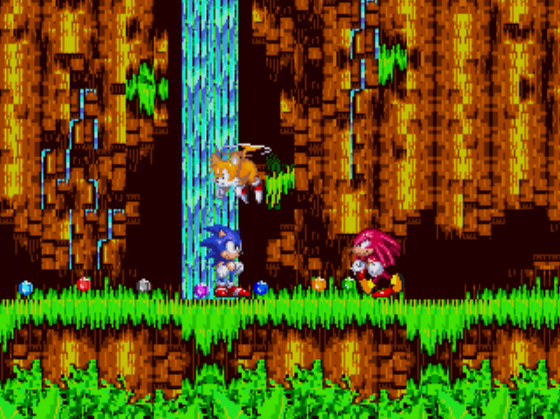

Though it was not the first video game the blue blur appeared in, Sonic the Hedgehog on the Sega Genesis (or Sega Mega Drive as it is known in other parts of the world) was the start of the Sonic franchise. The game released on June 23rd, 1991 and was met with success and popularity because of its stellar soundtrack, graphics, and gameplay. The game allowed SEGA to rival Nintendo and their mascot, Mario, and spawned two successful sequals: Sonic the Hedgehog 2 and Sonic the Hedgehog 3 & Knuckles. These games are commonly referred to as the Classic Era of Sonic.

Sonic was the only playable character in the first game. The game was a platformer with a physics engine that allowed Sonic to gain more speed as he runs without any interruptions like hitting a wall, falling into a bottomless pit, running into an enemy, or getting hit by spikes. As such, the game is able to reward the player for playing well and being able to avoid obstacles by allowing them to feel the excitment of speeding through levels as the blue hedgehog. Unlike Nintendo's Super Mario, Sonic collects rings instead of coins. Every 100 rings the player is able to get will reward the player with an extra life. However, if Sonic gets hit by an enemy or gets hit by spikes, he will lose all rings in his possession. If Sonic gets hit without any rings, the player will lose a life. Lives can also be lost when Sonic falls into a bottomless pit or is crushed by obstacles. When the player reaches the end of a stage with 50 rings or more, they can enter a special stage to obtain one of the 6 Chaose Emeralds.
Sonic the Hedgehog 2 introduces the new playable character, Miles "Tails" Prower, whose name is a pun on the phrase "miles per hour." Prior to starting the game, the player can choose to play as Sonic only, Tails only, or as both Sonic and Tails. A new move introduced in this game is the iconic spin dash, which is performed by holding down and pressing the jump button multiple times to rev it up. When playing as Tails only, Tails can fly by pressing the jump button in the air, allowing him to go up with every button press until he is exhausted. When playing as both Sonic and Tails, Player 1 controls Sonic and a second player can control Tails. Sonic can catch a ride with Tails and fly with him. To enter special stages, the player must run past a checkpoint with 50 or more rings. There are now 7 Chaos Emeralds and the player can transform into Super Sonic after collecting 50 rings and pressing the jump button in the air once all 7 emeralds are collected.

Sonic the Hedgehog 3 and Sonic & Knuckles were released as two separate games. However, the cartridge for Sonic & Knuckles can be attached to the Sonic the Hedgehog 3 cartridge to allow for the full experience of the game to be enjoyed as Sonic the Hedgehog 3 & Knuckles. The Sonic & Knuckles cartridge can also be attached with Sonic 2, allowing the player to play as Knuckles the Echidna in Sonic 2.
Sonic 3 & Knuckles introduces the playable character Knuckles the Echidna. Knuckles can glide if the player presses the jump button when he is in the air. When he glides into a wall, he can climb on to it and climb up and down. The special stages are entered this time by finding hidden giant rings in stages. While there are still the 7 Chaos Emeralds to collect, the game also introduces the 7 Super Emeralds, which can turn Sonic into Hyper Sonic.